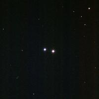

<div data-role="page" id="m40" data-theme="a">

	<div data-role="header">
		<a href="#home" data-icon="back" data-rel="back">Back</a>
		<h1>M40</h1>
		<a href="#home" data-icon="home">Home</a>
	</div>

	<div data-role="content">
		
		<div>
			<h2>
				M40: Double Star in
				<a href="../constellations/ursaMajor.html" class="m2c">Ursa
					Major</a>
			</h2>

			One of 3 oddities in the Messier catalogue.
			<p>A double star catalogued as Winnecke 4. Magnitude 8.4.
			<p>Image Credit: Reevesastronomy
		</div>
	</div>
</div>
